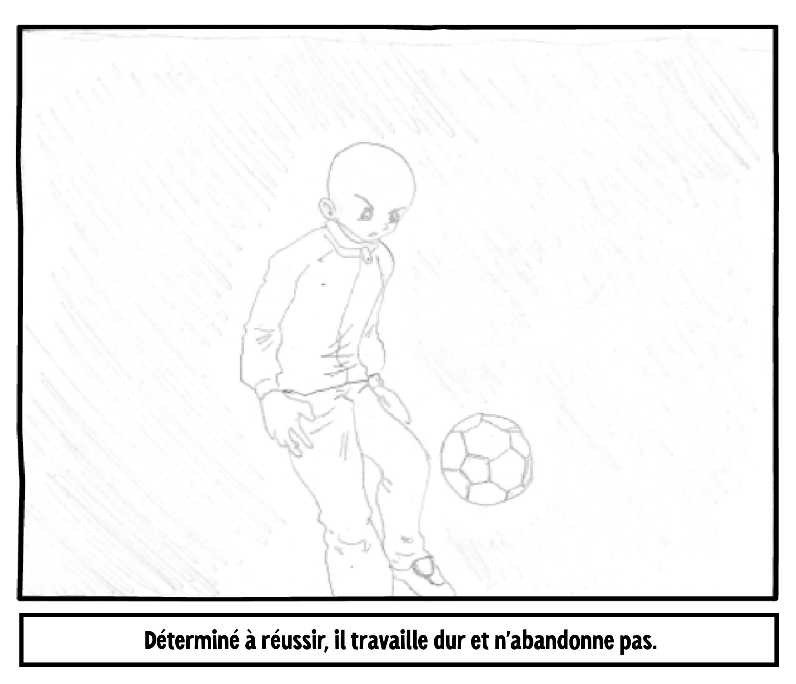
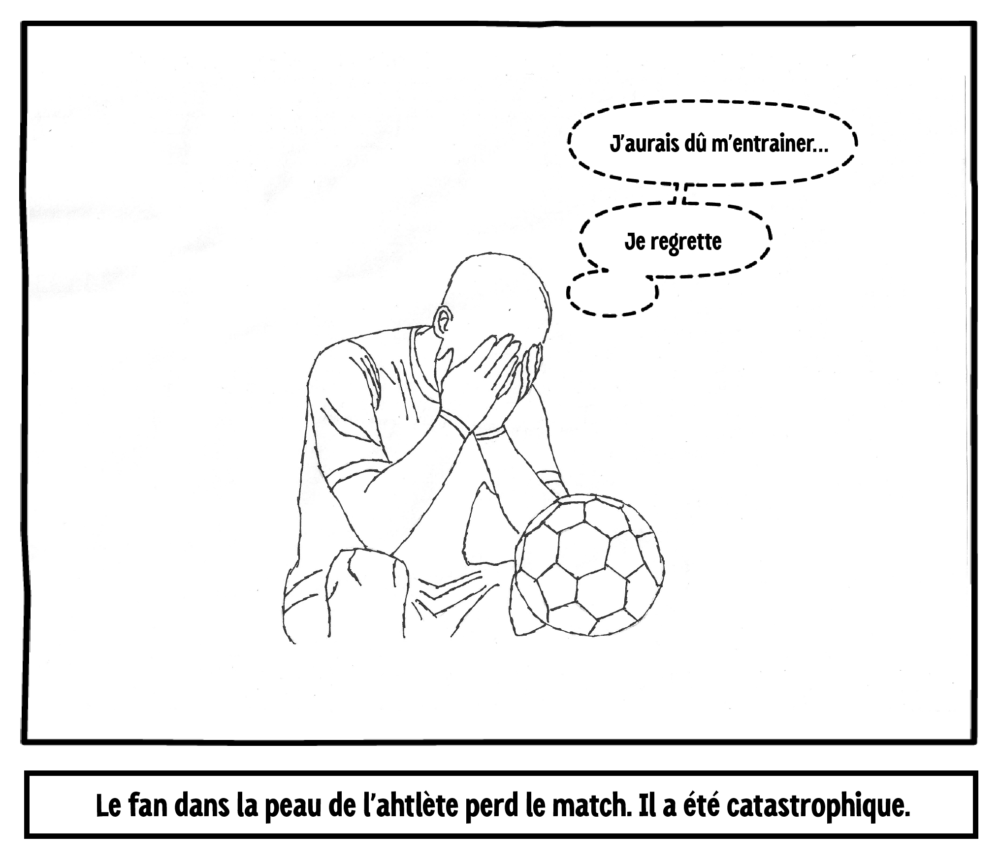
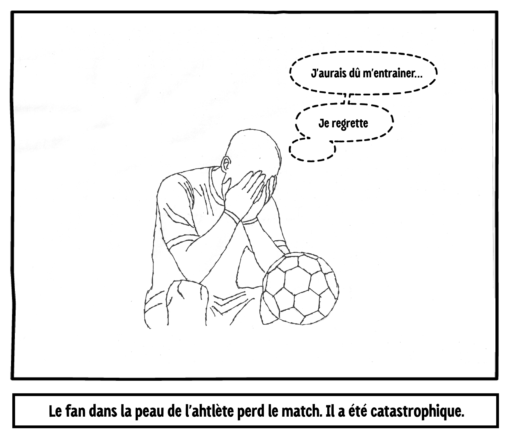

Quel personnage veux-tu suivre ?

Les paparazis l’abordent et il est submergé par les médias. Que veux-tu faire ?

FIN
Est-ce la bonne décision ?
 

FIN
Doit-il quitter sa famille ?
Que doit-il faire sur le terrain ?
FIN
FIN